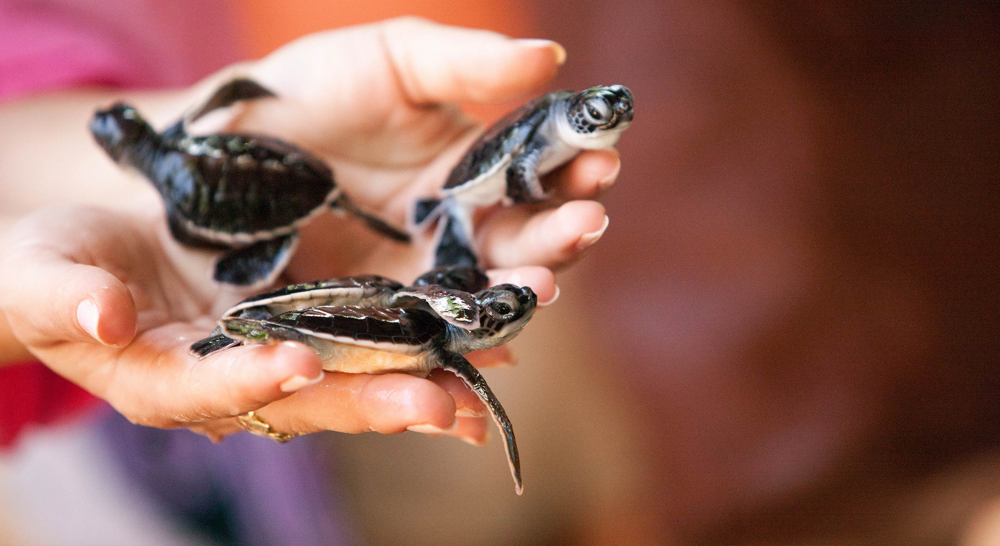

Kosgoda Turtle hatchery



10 Facts about the hatchery
- The Kosgoda Turtle Hatchery, located in Sri Lanka, is a captivating and educational place that aims to protect and
conserve sea turtles.
- The hatchery plays a vital role in preserving these endangered species by providing a safe
environment for nesting and hatching.
- Visitors to the hatchery can witness the remarkable process of turtle conservation
and gain a deeper understanding of the challenges these magnificent creatures face.
- At the Kosgoda Turtle Hatchery, trained staff and volunteers work tirelessly to monitor and protect turtle nests.
- They carefully collect eggs from vulnerable areas along the coast and relocate them to the hatchery, where they
can be shielded from natural threats and predators.
- Visitors can witness the hatching process and even have the
unique opportunity to release baby turtles into the ocean, contributing to the ongoing conservation efforts.
- In addition to its conservation efforts, the Kosgoda Turtle Hatchery also serves as an educational center, raising
awareness about the importance of protecting sea turtles and their habitats.
- Visitors can learn about the different
species of sea turtles found in Sri Lanka, their life cycles, and the environmental challenges they face.
- The hatchery's knowledgeable guides provide insightful explanations, making it an enriching experience for people of all ages.
- By visiting this hatchery, individuals can gain a deeper appreciation for these
incredible creatures and become advocates for their preservation.